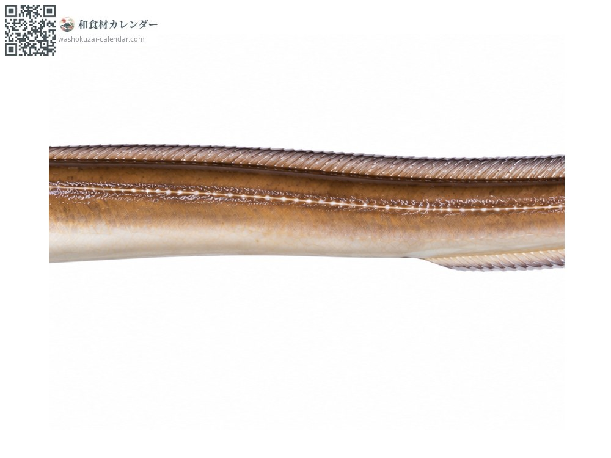
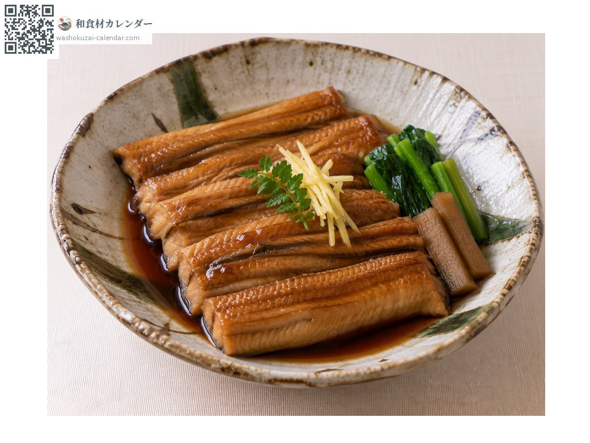
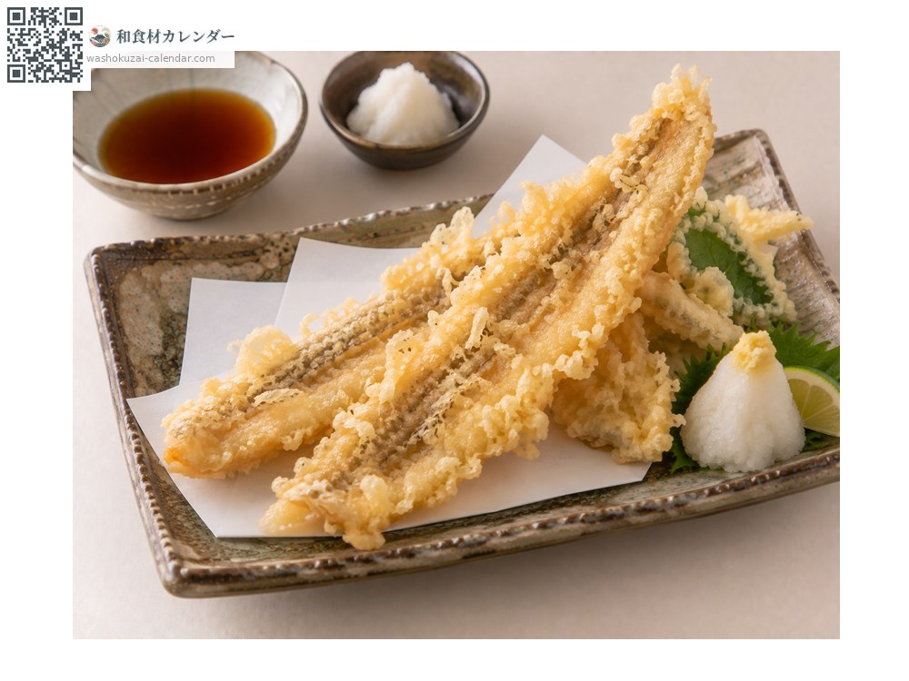
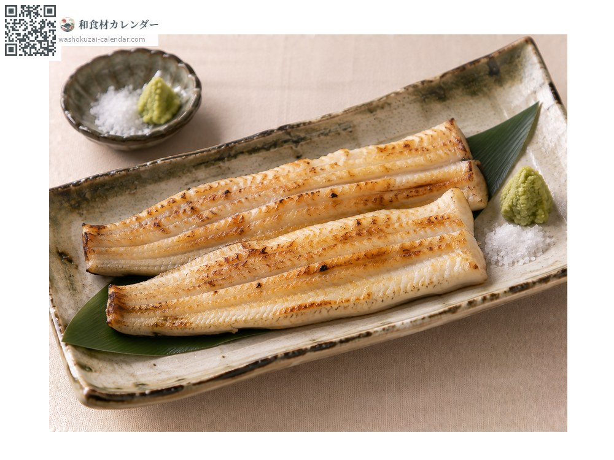
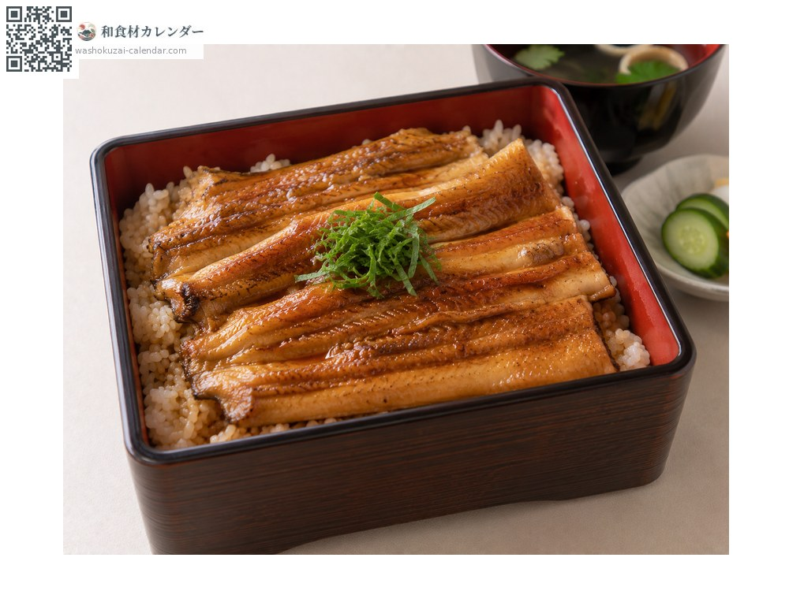

Seafood
Whitespotted conger
アナゴ あなご anago
Also known asanago
At its best in Jun, Jul, Aug

When it is at its best
Jan
Feb
Mar
Apr
May
Jun
Jul
Aug
Sep
Oct
Nov
Dec
In seasonAvailable
How to cook

Simmered conger eel
Simmered in a sweet glaze until tender. A sushi favourite.

Tempura
Light batter, fried until crisp.

Shirayaki (grilled plain, no sauce)
Grilled plain with salt and wasabi to taste the fish itself.

Anago-meshi (conger eel over rice)
Glazed and served over rice in a lacquer box.
How to choose
A slippery surface, a white belly and clear eyes.
Storage
Spoils quickly; process the same day. Once split, refrigerate for one day.
Main areas
Good to know
Akashi in Hyogo and Tokyo Bay are known sources. Leaner than freshwater eel, so the flavour is lighter.